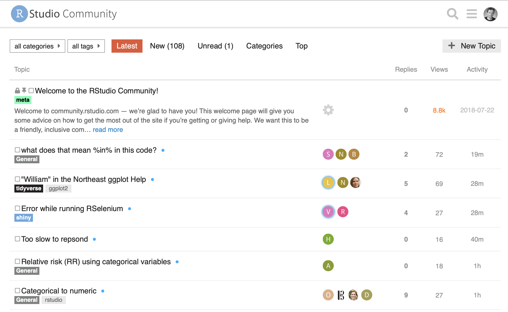

library(here) # manage file paths
library(socviz) # data and some useful functions
library(tidyverse) # your friend and mine
library(haven) # for Stata, SAS, and SPSS files
library(broom) # tidy model summariesMaking tidy easier
Data Wrangling, Session 8
Kieran Healy
Code Horizons
December 2025
Making it easier to be tidy
Load the packages, as always
Moving ahead
Some helpful things
The RStudio Community
The reprex package
Best demonstrated live
When asking for help, make a reproducible example
# A tibble: 57 × 4
homeworld species n pct
<chr> <chr> <int> <dbl>
1 Tatooine Human 8 9.20
2 <NA> Human 6 6.90
3 Naboo Human 5 5.75
4 Alderaan Human 3 3.45
5 Naboo Gungan 3 3.45
6 <NA> Droid 3 3.45
7 Corellia Human 2 2.30
8 Coruscant Human 2 2.30
9 Kamino Kaminoan 2 2.30
10 Kashyyyk Wookiee 2 2.30
# ℹ 47 more rowsThe usethis package

Quarto
| religion | Northeast | Midwest | South | West |
|---|---|---|---|---|
| Protestant | 158 | 325 | 650 | 238 |
| Catholic | 162 | 172 | 160 | 155 |
| Jewish | 27 | 3 | 11 | 10 |
| None | 112 | 157 | 170 | 180 |
| Other | 28 | 33 | 50 | 48 |
| NA | 1 | 5 | 11 | 1 |
Tables, tables, tables
The gtsummary package is very powerful. There are a number of other very good tidy table-making options too.
# A tibble: 200 × 8
trt age marker stage grade response death ttdeath
<chr> <dbl> <dbl> <fct> <fct> <int> <int> <dbl>
1 Drug A 23 0.16 T1 II 0 0 24
2 Drug B 9 1.11 T2 I 1 0 24
3 Drug A 31 0.277 T1 II 0 0 24
4 Drug A NA 2.07 T3 III 1 1 17.6
5 Drug A 51 2.77 T4 III 1 1 16.4
6 Drug B 39 0.613 T4 I 0 1 15.6
7 Drug A 37 0.354 T1 II 0 0 24
8 Drug A 32 1.74 T1 I 0 1 18.4
9 Drug A 31 0.144 T1 II 0 0 24
10 Drug B 34 0.205 T3 I 0 1 10.5
# ℹ 190 more rowsTables, tables, tables
The gtsummary package is very powerful. There are a number of other very good tidy table-making options too.
Tables, tables, tables
| Characteristic | N | Drug A N = 981 |
Drug B N = 1021 |
p-value2 |
|---|---|---|---|---|
| Age | 189 | 46 (37, 60) | 48 (39, 56) | 0.7 |
| Grade | 200 | 0.9 | ||
| I | 35 (36%) | 33 (32%) | ||
| II | 32 (33%) | 36 (35%) | ||
| III | 31 (32%) | 33 (32%) | ||
| Tumor Response | 193 | 28 (29%) | 33 (34%) | 0.5 |
| 1 Median (Q1, Q3); n (%) | ||||
| 2 Wilcoxon rank sum test; Pearson’s Chi-squared test | ||||
Tables, tables, tables
gtsummary() straight out of the box:
Tables, tables, tables
| Characteristic | White N = 2,0961 |
Black N = 4871 |
Other N = 2761 |
|---|---|---|---|
| Degree | |||
| Lt High School | 197 (9.4%) | 60 (12%) | 71 (26%) |
| High School | 1,057 (50%) | 292 (60%) | 112 (41%) |
| Junior College | 166 (7.9%) | 33 (6.8%) | 17 (6.2%) |
| Bachelor | 426 (20%) | 71 (15%) | 39 (14%) |
| Graduate | 250 (12%) | 31 (6.4%) | 37 (13%) |
| Marital Status | |||
| Married | 979 (47%) | 121 (25%) | 110 (40%) |
| Widowed | 196 (9.4%) | 35 (7.2%) | 18 (6.5%) |
| Divorced | 363 (17%) | 93 (19%) | 39 (14%) |
| Separated | 55 (2.6%) | 27 (5.5%) | 20 (7.2%) |
| Never Married | 503 (24%) | 211 (43%) | 89 (32%) |
| 1 n (%) | |||
Tables, tables, tables
With a bit more work …
Tables, tables, tables
| Characteristic | Drug A N = 98 |
Drug B N = 102 |
|---|---|---|
| Age | ||
| N Non-missing | 91 | 98 |
| Mean (SD) | 47 (15) | 47 (14) |
| Median (Q1, Q3) | 46 (37, 60) | 48 (39, 56) |
| Min, Max | 6, 78 | 9, 83 |
| Marker Level (ng/mL) | ||
| N Non-missing | 92 | 98 |
| Mean (SD) | 1.02 (0.89) | 0.82 (0.83) |
| Median (Q1, Q3) | 0.84 (0.23, 1.60) | 0.52 (0.18, 1.21) |
| Min, Max | 0.00, 3.87 | 0.01, 3.64 |
The power of lists
Similar to earlier, but simpler:
library(gapminder)
## Fit as a function, for clarity
fit_ols <- function(df) {
lm(lifeExp ~ log(gdpPercap), data = df)
}
out_le <- gapminder |>
filter(continent %nin% "Oceania") |>
group_by(continent) |>
nest() |>
mutate(model = map(data, fit_ols),
mod_sum = map(model, glance),
mod_terms = map(model, tidy, conf.int = TRUE),
) |>
unnest(cols = c(mod_terms))The power of lists
# A tibble: 8 × 11
# Groups: continent [4]
continent data model mod_sum term estimate std.error statistic p.value
<fct> <list> <lis> <list> <chr> <dbl> <dbl> <dbl> <dbl>
1 Asia <tibble> <lm> <tibble> (Int… 9.58 2.71 3.54 4.46e- 4
2 Asia <tibble> <lm> <tibble> log(… 6.25 0.331 18.9 3.73e- 57
3 Europe <tibble> <lm> <tibble> (Int… 13.0 1.92 6.76 5.52e- 11
4 Europe <tibble> <lm> <tibble> log(… 6.31 0.205 30.8 8.06e-103
5 Africa <tibble> <lm> <tibble> (Int… 7.60 2.63 2.89 4.03e- 3
6 Africa <tibble> <lm> <tibble> log(… 5.69 0.361 15.8 1.86e- 47
7 Americas <tibble> <lm> <tibble> (Int… -19.1 4.82 -3.95 9.65e- 5
8 Americas <tibble> <lm> <tibble> log(… 9.72 0.558 17.4 2.51e- 47
# ℹ 2 more variables: conf.low <dbl>, conf.high <dbl>The power of lists
## Nice formatting of the numbers
## There are many convenience packages
## like this; it's not too hard to write your own, either
# remotes::install_github("tjmahr/printy")
text_ready <- out_le |>
mutate(
across(c(estimate, conf.low, conf.high),
printy::fmt_fix_digits, 2),
se = printy::fmt_fix_digits(std.error, 3),
ci = glue::glue("[{conf.low}, {conf.high}]")
) |>
select(continent, term, estimate, se, ci)The power of lists
# A tibble: 8 × 5
# Groups: continent [4]
continent term estimate se ci
<fct> <chr> <chr> <chr> <glue>
1 Asia (Intercept) 9.58 2.706 [4.26, 14.90]
2 Asia log(gdpPercap) 6.25 0.331 [5.60, 6.90]
3 Europe (Intercept) 12.97 1.917 [9.19, 16.74]
4 Europe log(gdpPercap) 6.31 0.205 [5.91, 6.71]
5 Africa (Intercept) 7.60 2.632 [2.43, 12.77]
6 Africa log(gdpPercap) 5.69 0.361 [4.98, 6.40]
7 Americas (Intercept) -19.07 4.824 [-28.56, -9.58]
8 Americas log(gdpPercap) 9.72 0.558 [8.62, 10.82] The power of lists
Now …
The power of lists
Why are we doing this?
$Africa
$Africa$intercept
# A tibble: 1 × 5
# Groups: continent [1]
continent term estimate se ci
<fct> <chr> <chr> <chr> <glue>
1 Africa intercept 7.60 2.632 [2.43, 12.77]
$Africa$log_gdp_percap
# A tibble: 1 × 5
# Groups: continent [1]
continent term estimate se ci
<fct> <chr> <chr> <chr> <glue>
1 Africa log_gdp_percap 5.69 0.361 [4.98, 6.40]
$Americas
$Americas$intercept
# A tibble: 1 × 5
# Groups: continent [1]
continent term estimate se ci
<fct> <chr> <chr> <chr> <glue>
1 Americas intercept -19.07 4.824 [-28.56, -9.58]
$Americas$log_gdp_percap
# A tibble: 1 × 5
# Groups: continent [1]
continent term estimate se ci
<fct> <chr> <chr> <chr> <glue>
1 Americas log_gdp_percap 9.72 0.558 [8.62, 10.82]
$Asia
$Asia$intercept
# A tibble: 1 × 5
# Groups: continent [1]
continent term estimate se ci
<fct> <chr> <chr> <chr> <glue>
1 Asia intercept 9.58 2.706 [4.26, 14.90]
$Asia$log_gdp_percap
# A tibble: 1 × 5
# Groups: continent [1]
continent term estimate se ci
<fct> <chr> <chr> <chr> <glue>
1 Asia log_gdp_percap 6.25 0.331 [5.60, 6.90]
$Europe
$Europe$intercept
# A tibble: 1 × 5
# Groups: continent [1]
continent term estimate se ci
<fct> <chr> <chr> <chr> <glue>
1 Europe intercept 12.97 1.917 [9.19, 16.74]
$Europe$log_gdp_percap
# A tibble: 1 × 5
# Groups: continent [1]
continent term estimate se ci
<fct> <chr> <chr> <chr> <glue>
1 Europe log_gdp_percap 6.31 0.205 [5.91, 6.71]
$Oceania
named list()The power of lists
The Intercept term for Africa was 'r stats$Africa$intercept$estimate' 'r stats$Africa$intercept$ci'.
For Europe it was 'r stats$Europe$intercept$estimate' 'r stats$Europe$intercept$ci'
The Intercept term for Africa was 7.60 [2.43, 12.77].
For Europe it was 12.97 [9.19, 16.74].
For more, see this post by TJ Mahr:
Test the output of your functions
# A tibble: 213 × 4
cname iso3 iso2 continent
<chr> <chr> <chr> <chr>
1 Afghanistan AFG AF Asia
2 Algeria DZA DZ Africa
3 Armenia ARM AM Asia
4 Australia AUS AU Oceania
5 Austria AUT AT Europe
6 Azerbaijan AZE AZ Asia
7 Bahrain BHR BH Asia
8 Belarus BLR BY Europe
9 Belgium BEL BE Europe
10 Brazil BRA BR South America
# ℹ 203 more rowsTest the output of your functions
get_stmf <- function(url = "https://www.mortality.org/File/GetDocument/Public/STMF/Outputs",
fname = "stmf",
date = lubridate::today(),
ext = "csv",
dest = "data-raw/data",
save_file = c("n", "y"),
...) {
save_file <- match.arg(save_file)
target <- fs::path(url, fname, ext = ext)
message("target: ", target)
destination <- fs::path(here::here("data-raw/data"),
paste0(fname, "_", date), ext = ext)
tf <- tempfile(fileext = ext)
curl::curl_download(target, tf)
switch(save_file,
y = fs::file_copy(tf, destination),
n = NULL)
janitor::clean_names(read_csv(tf, ...))
}Test the output of your functions
stmf_raw <- read_csv(here("data", "stmf.csv"), skip = 2) |>
janitor::clean_names() |>
rename(deaths_total = d_total, rate_total = r_total) |>
select(country_code:sex, deaths_total, rate_total, split:forecast, everything()) |>
pivot_longer(
cols = d0_14:r85p,
names_to = c("measure", "age_group"),
names_pattern = "(r|d)(.*)"
) |>
pivot_wider(names_from = measure,
values_from = value) |>
mutate(age_group = str_replace(age_group, "_", "-"),
age_group = str_replace(age_group, "p", "+")) |>
rename(death_count = d, death_rate = r) |>
mutate(approx_date = paste0(year, "-", "W",
str_pad(week, width = 2, pad = "0"), "-", "7"),
approx_date = ISOweek::ISOweek2date(approx_date)) |>
select(country_code:sex, split:forecast, approx_date,
age_group:death_rate, deaths_total, rate_total) |>
mutate(country_code = replace(country_code, country_code == "AUS2", "AUS"),
country_code = replace(country_code, country_code == "NZL_NP", "NZL"))Test the output of your functions
# A tibble: 576,840 × 13
country_code year week sex split split_sex forecast approx_date age_group
<chr> <dbl> <dbl> <chr> <dbl> <dbl> <dbl> <date> <chr>
1 AUS 2015 1 m 1 0 0 2015-01-04 0-14
2 AUS 2015 1 m 1 0 0 2015-01-04 15-64
3 AUS 2015 1 m 1 0 0 2015-01-04 65-74
4 AUS 2015 1 m 1 0 0 2015-01-04 75-84
5 AUS 2015 1 m 1 0 0 2015-01-04 85+
6 AUS 2015 1 f 1 0 0 2015-01-04 0-14
7 AUS 2015 1 f 1 0 0 2015-01-04 15-64
8 AUS 2015 1 f 1 0 0 2015-01-04 65-74
9 AUS 2015 1 f 1 0 0 2015-01-04 75-84
10 AUS 2015 1 f 1 0 0 2015-01-04 85+
# ℹ 576,830 more rows
# ℹ 4 more variables: death_count <dbl>, death_rate <dbl>, deaths_total <dbl>,
# rate_total <dbl>Test the output of your functions
md_ccodes <- tibble(country_code = unique(stmf_raw$country_code)) |>
left_join(countries, by = c("country_code" = "iso3")) |>
mutate(cname = replace(cname, country_code == "DEUTNP", "Germany"),
iso2 = replace(iso2, country_code == "DEUTNP", "DE"),
continent = replace(continent, country_code == "DEU", "Europe"),
cname = replace(cname, country_code == "FRATNP", "France"),
iso2 = replace(iso2, country_code == "FRATNP", "FR"),
continent = replace(continent, country_code == "FRA", "Europe"),
cname = replace(cname, country_code == "GBRTENW", "England and Wales"),
cname = replace(cname, country_code == "GBR_SCO", "Scotland"),
cname = replace(cname, country_code == "GBR_NIR", "Northern Ireland"),
continent = replace(continent, country_code %in% c("GBRTENW", "GBR_SCO", "GBR_NIR"), "Europe")
) |>
left_join(countries)
stmf <- left_join(stmf_raw, md_ccodes) |>
select(country_code, cname:iso3, everything()) |>
mutate(iso3 = replace(iso3, iso2 == "DE", "DEU"),
iso3 = replace(iso3, iso2 == "FR", "FRA"))Test the output of your functions
# A tibble: 576,840 × 17
country_code cname iso2 continent iso3 year week sex split split_sex
<chr> <chr> <chr> <chr> <chr> <dbl> <dbl> <chr> <dbl> <dbl>
1 AUS Austral… AU Oceania AUS 2015 1 m 1 0
2 AUS Austral… AU Oceania AUS 2015 1 m 1 0
3 AUS Austral… AU Oceania AUS 2015 1 m 1 0
4 AUS Austral… AU Oceania AUS 2015 1 m 1 0
5 AUS Austral… AU Oceania AUS 2015 1 m 1 0
6 AUS Austral… AU Oceania AUS 2015 1 f 1 0
7 AUS Austral… AU Oceania AUS 2015 1 f 1 0
8 AUS Austral… AU Oceania AUS 2015 1 f 1 0
9 AUS Austral… AU Oceania AUS 2015 1 f 1 0
10 AUS Austral… AU Oceania AUS 2015 1 f 1 0
# ℹ 576,830 more rows
# ℹ 7 more variables: forecast <dbl>, approx_date <date>, age_group <chr>,
# death_count <dbl>, death_rate <dbl>, deaths_total <dbl>, rate_total <dbl>For example, manually
[1] TRUE- Imagine how you might build up a set of tests and checks
- But you don’t have to manage this manually
Use testthat to check things
## countries
test_that("countries conforms to spec", {
countries_colnames <- c("cname", "iso3", "iso2", "continent")
expect_equal(colnames(countries), countries_colnames)
})
## stmf
test_that("stmf conforms to spec", {
stmf_colnames <- c("country_code", "cname", "iso2", "continent", "iso3", "year",
"week", "sex", "split", "split_sex", "forecast", "approx_date",
"age_group", "death_count", "death_rate", "deaths_total", "rate_total")
expect_equal(colnames(stmf), stmf_colnames)
})Use testthat to check things
testthat::test_dir(here("tests", "testthat"))
## ✓ | OK F W S | Context
##
## - | 0 | stmf
## - | 0 | Validating package data objects
## ✓ | 2 | Validating package data objects
##
## ══ Results ═════════════════════════════════════════════════════════════════════
## [ FAIL 0 | WARN 0 | SKIP 0 | PASS 2 ]testthat in practice
Oriented towards package development
Consider packaging your datasets! Benefits to documentation/codebooks etc
One-table example: uscenpops
More extensive: covdata
How R packages work: Wickham & Bryan
Summarizing your wrangling with skimr
- We might want to make a codebook of our data
Summarize with skimr
- We might want to make a codebook of our data
Summarize with skimr
Variable type: numeric
| skim_variable | n_missing | complete_rate | mean | sd | p0 | p25 | p50 | p75 | p100 | hist |
|---|---|---|---|---|---|---|---|---|---|---|
| year | 34 | 0.86 | 1996.50 | 3.46 | 1991.00 | 1993.75 | 1996.50 | 1999.25 | 2002.00 | ▇▅▅▅▇ |
| donors | 34 | 0.86 | 16.48 | 5.11 | 5.20 | 13.00 | 15.10 | 19.60 | 33.90 | ▁▇▅▂▁ |
| pop | 17 | 0.93 | 39921.29 | 62219.22 | 3514.00 | 6938.00 | 15531.00 | 57301.00 | 288369.00 | ▇▁▁▁▁ |
| pop.dens | 17 | 0.93 | 12.00 | 11.09 | 0.22 | 1.94 | 9.49 | 19.11 | 38.89 | ▇▃▃▂▁ |
| gdp | 17 | 0.93 | 22986.18 | 4665.92 | 12917.00 | 19546.00 | 22756.00 | 26180.00 | 36554.00 | ▂▇▇▃▁ |
| gdp.lag | 0 | 1.00 | 22574.92 | 4790.71 | 11434.00 | 19034.25 | 22158.00 | 25886.50 | 36554.00 | ▂▇▇▃▁ |
| health | 0 | 1.00 | 2073.75 | 733.59 | 791.00 | 1581.00 | 1956.00 | 2407.50 | 5665.00 | ▆▇▂▁▁ |
| health.lag | 0 | 1.00 | 1972.99 | 699.24 | 727.00 | 1542.00 | 1850.50 | 2290.25 | 5267.00 | ▆▇▂▁▁ |
| pubhealth | 21 | 0.91 | 6.19 | 0.92 | 4.30 | 5.50 | 6.00 | 6.90 | 8.80 | ▂▇▅▃▁ |
| roads | 17 | 0.93 | 113.04 | 36.33 | 58.21 | 83.46 | 111.22 | 139.57 | 232.48 | ▇▇▆▂▁ |
| cerebvas | 17 | 0.93 | 610.80 | 144.45 | 300.00 | 500.00 | 604.00 | 698.00 | 957.00 | ▂▅▇▃▂ |
| assault | 17 | 0.93 | 16.53 | 17.33 | 4.00 | 9.00 | 11.00 | 16.00 | 103.00 | ▇▁▁▁▁ |
| external | 17 | 0.93 | 450.06 | 118.19 | 258.00 | 367.00 | 421.00 | 534.00 | 853.00 | ▆▇▅▁▁ |
| txp.pop | 17 | 0.93 | 0.72 | 0.20 | 0.22 | 0.63 | 0.71 | 0.83 | 1.12 | ▁▂▇▃▃ |
Summarize with skimr
Variable type: character
| skim_variable | n_missing | complete_rate | min | max | empty | n_unique | whitespace |
|---|---|---|---|---|---|---|---|
| country | 0 | 1.00 | 5 | 14 | 0 | 17 | 0 |
| world | 14 | 0.94 | 6 | 11 | 0 | 3 | 0 |
| opt | 28 | 0.88 | 2 | 3 | 0 | 2 | 0 |
| consent.law | 0 | 1.00 | 8 | 8 | 0 | 2 | 0 |
| consent.practice | 0 | 1.00 | 8 | 8 | 0 | 2 | 0 |
| consistent | 0 | 1.00 | 2 | 3 | 0 | 2 | 0 |
| ccode | 0 | 1.00 | 2 | 4 | 0 | 17 | 0 |
Custom Summaries
stmf_country_years <- function(df = stmf) {
df |>
dplyr::select(cname, year) |>
dplyr::group_by(cname, year) |>
dplyr::tally() |>
dplyr::mutate(n = as.character(n),
n = dplyr::recode(n, "0" = "-", .default = "Y")) |>
dplyr::group_by(year, cname) |>
dplyr::arrange(year) |>
tidyr::pivot_wider(names_from = year, values_from = n) |>
dplyr::mutate(dplyr::across(where(is.character), dplyr::recode, .missing = "-")) |>
dplyr::arrange(cname)
}Custom Summaries
| cname | 1990 | 1991 | 1992 | 1993 | 1994 | 1995 | 1996 | 1997 | 1998 | 1999 | 2000 | 2001 | 2002 | 2003 | 2004 | 2005 | 2006 | 2007 | 2008 | 2009 | 2010 | 2011 | 2012 | 2013 | 2014 | 2015 | 2016 | 2017 | 2018 | 2019 | 2020 | 2021 | 2022 |
|---|---|---|---|---|---|---|---|---|---|---|---|---|---|---|---|---|---|---|---|---|---|---|---|---|---|---|---|---|---|---|---|---|---|
| Australia | - | - | - | - | - | - | - | - | - | - | - | - | - | - | - | - | - | - | - | - | - | - | - | - | - | Y | Y | Y | Y | Y | Y | Y | Y |
| Austria | - | - | - | - | - | - | - | - | - | - | Y | Y | Y | Y | Y | Y | Y | Y | Y | Y | Y | Y | Y | Y | Y | Y | Y | Y | Y | Y | Y | Y | Y |
| Belgium | - | - | - | - | - | - | - | - | - | - | Y | Y | Y | Y | Y | Y | Y | Y | Y | Y | Y | Y | Y | Y | Y | Y | Y | Y | Y | Y | Y | Y | Y |
| Bulgaria | - | - | - | - | - | - | - | - | - | - | Y | Y | Y | Y | Y | Y | Y | Y | Y | Y | Y | Y | Y | Y | Y | Y | Y | Y | Y | Y | Y | Y | Y |
| Canada | - | - | - | - | - | - | - | - | - | - | - | - | - | - | - | - | - | - | - | - | Y | Y | Y | Y | Y | Y | Y | Y | Y | Y | Y | Y | Y |
| Chile | - | - | - | - | - | - | - | - | - | - | - | - | - | - | - | - | - | - | - | - | - | - | - | - | - | - | Y | Y | Y | Y | Y | Y | Y |
| Croatia | - | - | - | - | - | - | - | - | - | - | - | Y | Y | Y | Y | Y | Y | Y | Y | Y | Y | Y | Y | Y | Y | Y | Y | Y | Y | Y | Y | Y | Y |
| Czech Republic | - | - | - | - | - | - | - | - | - | - | - | - | - | - | - | Y | Y | Y | Y | Y | Y | Y | Y | Y | Y | Y | Y | Y | Y | Y | Y | Y | Y |
| Denmark | - | - | - | - | - | - | - | - | - | - | - | - | - | - | - | - | - | Y | Y | Y | Y | Y | Y | Y | Y | Y | Y | Y | Y | Y | Y | Y | Y |
| England and Wales | - | - | - | - | - | - | - | - | - | - | - | - | - | - | - | - | - | - | - | - | Y | Y | Y | Y | Y | Y | Y | Y | Y | Y | Y | Y | Y |
| Estonia | - | - | - | - | - | - | - | - | - | - | Y | Y | Y | Y | Y | Y | Y | Y | Y | Y | Y | Y | Y | Y | Y | Y | Y | Y | Y | Y | Y | Y | Y |
| Finland | Y | Y | Y | Y | Y | Y | Y | Y | Y | Y | Y | Y | Y | Y | Y | Y | Y | Y | Y | Y | Y | Y | Y | Y | Y | Y | Y | Y | Y | Y | Y | Y | Y |
| France | - | - | - | - | - | - | - | - | - | - | Y | Y | Y | Y | Y | Y | Y | Y | Y | Y | Y | Y | Y | Y | Y | Y | Y | Y | Y | Y | Y | Y | Y |
| Germany | - | - | - | - | - | - | - | - | - | - | Y | Y | Y | Y | Y | Y | Y | Y | Y | Y | Y | Y | Y | Y | Y | Y | Y | Y | Y | Y | Y | Y | Y |
| Greece | - | - | - | - | - | - | - | - | - | - | - | - | - | - | - | - | - | - | - | - | - | - | - | - | - | Y | Y | Y | Y | Y | Y | Y | Y |
| Hungary | - | - | - | - | - | - | - | - | - | - | Y | Y | Y | Y | Y | Y | Y | Y | Y | Y | Y | Y | Y | Y | Y | Y | Y | Y | Y | Y | Y | Y | Y |
| Iceland | - | - | - | - | - | - | - | - | - | - | Y | Y | Y | Y | Y | Y | Y | Y | Y | Y | Y | Y | Y | Y | Y | Y | Y | Y | Y | Y | Y | Y | Y |
| Israel | - | - | - | - | - | - | - | - | - | - | Y | Y | Y | Y | Y | Y | Y | Y | Y | Y | Y | Y | Y | Y | Y | Y | Y | Y | Y | Y | Y | Y | Y |
| Italy | - | - | - | - | - | - | - | - | - | - | - | - | - | - | - | - | - | - | - | - | - | Y | Y | Y | Y | Y | Y | Y | Y | Y | Y | Y | Y |
| Korea, Republic of | - | - | - | - | - | - | - | - | - | - | - | - | - | - | - | - | - | - | - | - | Y | Y | Y | Y | Y | Y | Y | Y | Y | Y | Y | Y | Y |
| Latvia | - | - | - | - | - | - | - | - | - | - | Y | Y | Y | Y | Y | Y | Y | Y | Y | Y | Y | Y | Y | Y | Y | Y | Y | Y | Y | Y | Y | Y | Y |
| Lithuania | - | - | - | - | - | - | - | - | - | - | Y | Y | Y | Y | Y | Y | Y | Y | Y | Y | Y | Y | Y | Y | Y | Y | Y | Y | Y | Y | Y | Y | Y |
| Luxembourg | - | - | - | - | - | - | - | - | - | - | Y | Y | Y | Y | Y | Y | Y | Y | Y | Y | Y | Y | Y | Y | Y | Y | Y | Y | Y | Y | Y | Y | Y |
| Netherlands | - | - | - | - | - | Y | Y | Y | Y | Y | Y | Y | Y | Y | Y | Y | Y | Y | Y | Y | Y | Y | Y | Y | Y | Y | Y | Y | Y | Y | Y | Y | Y |
| New Zealand | - | - | - | - | - | - | - | - | - | - | - | - | - | - | - | - | - | - | - | - | Y | Y | Y | Y | Y | Y | Y | Y | Y | Y | Y | Y | Y |
| Northern Ireland | - | - | - | - | - | - | - | - | - | - | - | - | - | - | - | - | - | - | - | - | - | - | - | - | - | Y | Y | Y | Y | Y | Y | Y | Y |
| Norway | - | - | - | - | - | - | - | - | - | - | Y | Y | Y | Y | Y | Y | Y | Y | Y | Y | Y | Y | Y | Y | Y | Y | Y | Y | Y | Y | Y | Y | Y |
| Poland | - | - | - | - | - | - | - | - | - | - | Y | Y | Y | Y | Y | Y | Y | Y | Y | Y | Y | Y | Y | Y | Y | Y | Y | Y | Y | Y | Y | Y | Y |
| Portugal | - | - | - | - | - | - | - | - | - | - | Y | Y | Y | Y | Y | Y | Y | Y | Y | Y | Y | Y | Y | Y | Y | Y | Y | Y | Y | Y | Y | Y | Y |
| Russian Federation | - | - | - | - | - | - | - | - | - | - | Y | Y | Y | Y | Y | Y | Y | Y | Y | Y | Y | Y | Y | Y | Y | Y | Y | Y | Y | Y | Y | - | - |
| Scotland | - | - | - | - | - | - | - | - | - | - | Y | Y | Y | Y | Y | Y | Y | Y | Y | Y | Y | Y | Y | Y | Y | Y | Y | Y | Y | Y | Y | Y | Y |
| Slovakia | - | - | - | - | - | - | - | - | - | - | Y | Y | Y | Y | Y | Y | Y | Y | Y | Y | Y | Y | Y | Y | Y | Y | Y | Y | Y | Y | Y | Y | Y |
| Slovenia | - | - | - | - | - | - | - | - | - | - | Y | Y | Y | Y | Y | Y | Y | Y | Y | Y | Y | Y | Y | Y | Y | Y | Y | Y | Y | Y | Y | Y | Y |
| Spain | - | - | - | - | - | - | - | - | - | - | Y | Y | Y | Y | Y | Y | Y | Y | Y | Y | Y | Y | Y | Y | Y | Y | Y | Y | Y | Y | Y | Y | Y |
| Sweden | - | - | - | - | - | - | - | - | - | - | Y | Y | Y | Y | Y | Y | Y | Y | Y | Y | Y | Y | Y | Y | Y | Y | Y | Y | Y | Y | Y | Y | Y |
| Switzerland | - | - | - | - | - | - | - | - | - | - | Y | Y | Y | Y | Y | Y | Y | Y | Y | Y | Y | Y | Y | Y | Y | Y | Y | Y | Y | Y | Y | Y | Y |
| Taiwan, Province of China | - | - | - | - | - | - | - | - | - | - | Y | Y | Y | Y | Y | Y | Y | Y | Y | Y | Y | Y | Y | Y | Y | Y | Y | Y | Y | Y | Y | Y | - |
| United States | - | - | - | - | - | - | - | - | - | - | - | - | - | - | - | - | - | - | - | - | - | - | - | - | - | Y | Y | Y | Y | Y | Y | Y | Y |